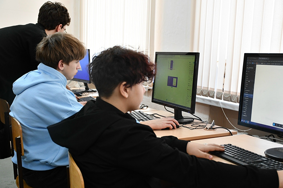
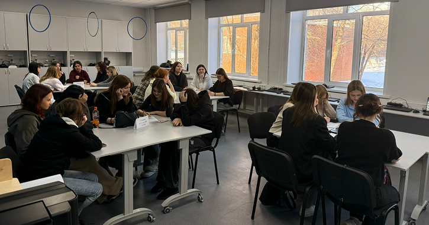
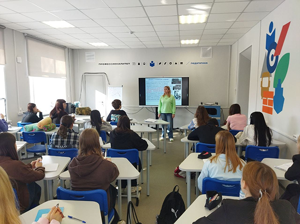
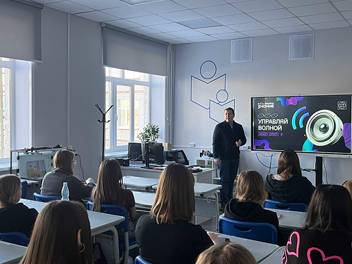

Следуй по маршруту — каждый этап приближает к зачислению
Изучи список направлений и выбери то, что тебе по душе. Обрати внимание на форму обучения.
Следи за конкурсной ситуацией в списках абитуриентов. При необходимости подай оригинал аттестата.
После зачисления приходи на день первокурсника, познакомься с группой и преподавателями.
Собери необходимые документы и подай заявление лично, почтой или онлайн до указанных сроков.
Пройди творческие или профессиональные экзамены (если они предусмотрены для твоей специальности).
Нажмите на дату или перемещайте ползунок, чтобы увидеть подробности каждого этапа.




Учитель начальных классов, очно / заочно
Педагог по физкультуре, тренер
Воспитатель детей дошкольного возраста
Педагог по адаптивной физической культуре
Программирование, цифровые технологии
Оператор информационных систем и ресурсов
ТСПК создаёт равные условия для получения профессионального образования абитуриентами с ограниченными возможностями здоровья и инвалидностью.
Все корпуса оборудованы пандусами, поручнями, тактильными табличками и специально оборудованными санитарными комнатами.
Предоставляются программы экранного доступа, синтезаторы речи, возможность увеличения шрифта.
Возможно закрепление тьютора на время обучения, помощь в организации учебного процесса.
Увеличение времени, отдельная аудитория, присутствие ассистента, специальные форматы заданий.
При подаче заявления необходимо указать наличие инвалидности и желаемые специальные условия. Приёмная комиссия совместно с Центром инклюзивного образования разработает индивидуальный план сопровождения.
Специалист по инклюзии: 8 (8482) 24-65-93 (доб. 125), email: inkl@tspk.ru
ул. Мурысева 84, каб. 114
8 (8482) 24-65-92
Пн–Чт: 8:30 – 17:00 (обед 12:30–13:00)
Пт: 8:30 – 16:00 (обед 12:30–13:00)
Ланчиков Максим Николаевич
тел. приемной: (8482) 24-30-54
Все студенты обеспечиваются ПК, принтер, сканер, графический планшет, веб-камера.
Предоставляется на весь период обучения (согласно поправкам).